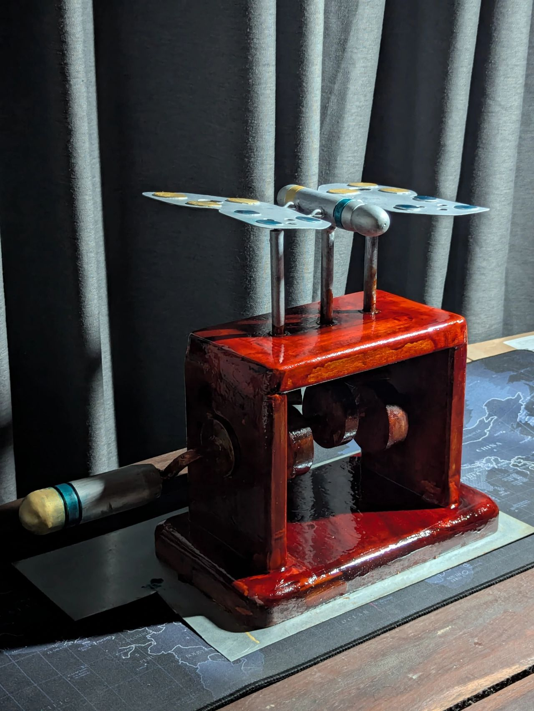
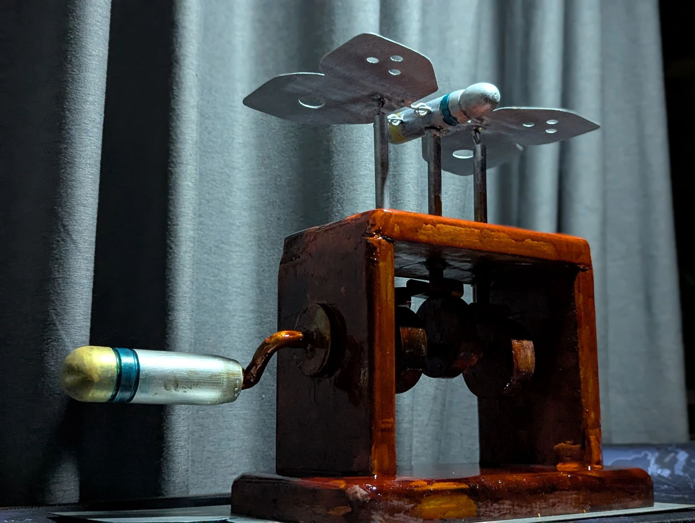

The Automaton Butterfly


Description
Developed as a Semester 2 manufacturing project at the Department of Mechanical Engineering (DoME), University of Moratuwa, The Automaton Butterfly is a kinetic mechanical sculpture that blends artistic design with foundational engineering principles.
The Mechanism
The butterfly comes to life through a manually operated handle connected to a precision-engineered cam and follower mechanism. As the handle is turned, the mechanism smoothly translates rotary motion into the gentle, rhythmic flapping of the wings.
Fabrication & Techniques
Moving from the planning phase to the final build required extensive hands-on fabrication and teamwork. To construct the various components of the automaton, our team utilized a wide range of core manufacturing processes, including:
- Sheet metal forming
- Metal lathe machining
- Woodworking
- Welding
- Forging
Outcome
This project served as a bridge between theoretical mechanics and real-world fabrication. It provided invaluable experience in precision machining, overcoming physical assembly challenges, and successfully integrating mechanical motion into an artistic final product.